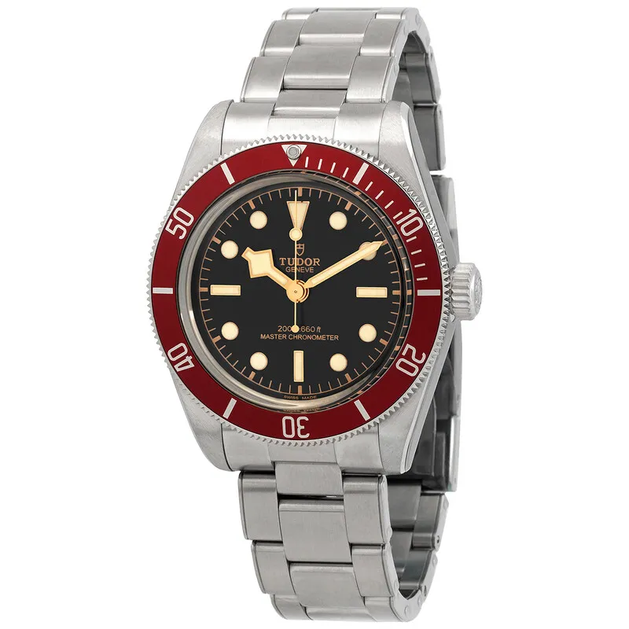

Encyclopedia / Tudor / Black Bay 41

Current deal · verified Oct 19, 2026, 10:05 PM ET
$4,150 Retail $5,325
Save $1,175 (22%) · new · Jomashop
Ref. M7941A1A0RU-0001 (burgundy bezel, steel bracelet) · Listed new on Jomashop
Brand new from a grey-market dealer; the warranty may be Jomashop's rather than Tudor's. WatchMaxx had the same ref at $4,798 (10:05 PM ET). Prices change fast; check the store before you buy.
Price comparison: fixed-price listings
| Store | Condition | Box & papers | Asking price | Link | Checked |
|---|---|---|---|---|---|
| Swiss Watch Expo | pre-owned | Yes | $4,360 | View | Oct 19, 2026 |
| WatchMaxx | new | Yes* | $4,798 | View | Oct 19, 2026 |
Fixed-price (buy-now) asking prices in USD for ref. M7941A1A0RU-0001, cheapest new and cheapest pre-owned with box and papers per store, sorted low to high and checked Oct 19, 2026 (ET). Buy-now listings only. Pre-owned listings are shown only when the listing states box and papers. * New from a grey-market dealer: comes boxed, but the warranty card may be the dealer's rather than the brand's. Chrono24 rows are individual third-party marketplace sellers. Prices change fast; confirm with the store.
What it really costs
| Market | Price | Source |
|---|---|---|
| Tudor US retail | $5,325 (M7941A1A0RU-0001) | tudorwatch.com |
| Grey-market new | $4,150 Jomashop · $4,798 WatchMaxx | jomashop.com / watchmaxx.com |
| Pre-owned | about $3,600 – $5,350 (median ~$4,450) | Chrono24 |
All prices in USD, checked Oct 19, 2026 (ET). Pre-owned ranges are the middle 80% of asking prices on the first Chrono24 results page for that ref (about 60 listings, used and some unworn), fixed-price listings only. Grey-market = brand-new from a non-authorized dealer.
Buying guide
Key references
| Ref. | What it is | US retail |
|---|---|---|
| M7941A1A0RU-0001 | 41 mm, burgundy aluminium bezel insert, 3-link bracelet, MT5602-U | $5,325 |
Which one I'd pick
Black Bay 41 vs Black Bay 58: the 41 is the bigger, more modern-wearing diver with Master Chronometer certification. The 58 is 39 mm and more vintage. At $4,150 grey-market, the 41 is the cheaper of the two today.
What to check before you buy
- Box and papers: a brand warranty card matters for resale. Grey-market new watches may carry the dealer's warranty instead of the brand's, so ask which one you're getting.
- Ref check: there are many Black Bay variants. Match the full ref (M7941A1A0RU-0001) before comparing prices.
- Fakes and red flags: avoid prices far below the grey-market numbers above, stock photos only, or sellers who won't show the caseback, clasp and warranty card.
Alternatives worth a look
- Tudor Black Bay 58: The smaller, vintage-sized Black Bay. (39 mm stainless steel, Calibre MT5400-U, retail From $4,975 (rubber); $5,225–$5,350 on bracelet)
- Omega Seamaster Diver 300M: Ceramic 42 mm diver, below retail grey-market. (42 mm stainless steel, Calibre 8800, retail $6,700 (steel bracelet; blue .03.001 or black .01.001))
- Rolex Submariner: The Rolex big brother, at a big premium. (41 mm Oystersteel, Calibre 3230 (no-date) / 3235 (date), retail $10,050 (124060); $11,350 (126610LN))
History
Montres Tudor SA has made Tudor watches since 1946. Rolex founder Hans Wilsdorf conceived the brand so authorized Rolex dealers could sell a watch with Rolex-like reliability at a lower price.
Tudor left the US market in 2004 and came back in 2013. In between, in 2012, it launched the original Black Bay with a burgundy bezel.
The Black Bay got Tudor's own Manufacture Calibre in 2016. Today's 41 mm M7941A1A0RU-0001 uses the MT5602-U, certified by both COSC and METAS, with a 70-hour power reserve and 200 m water resistance.
Montres Tudor SA has made Tudor watches since 6 March 1946. Rolex founder Hans Wilsdorf conceived Tudor so authorized Rolex dealers could sell a watch with Rolex-like reliability at a lower price.
Specifications
| Brand | Tudor |
|---|---|
| Model | Black Bay 41 |
| Key references | M7941A1A0RU-0001 |
| Launch year | 2012 (Black Bay) |
| Case | 41 mm stainless steel |
| Crystal | Domed sapphire |
| Bezel | 60-minute unidirectional, steel with burgundy aluminium insert |
| Bracelet | 3-link steel, polished and satin, T-fit clasp |
| Movement | Calibre MT5602-U, automatic (Master Chronometer) |
| Power reserve | 70 hours |
| Water resistance | 200 m |
| Approx. US retail (Oct 2026) | $5,325 (M7941A1A0RU-0001) |
Specs from the brand's official product page for the main reference. Retail prices are list prices, not market value, and change often.
Highlights
- Snowflake hands
- Burgundy aluminium bezel
- METAS-certified Master Chronometer
FAQ
How much is a Tudor Black Bay 41?
Tudor's US site lists the M7941A1A0RU-0001 at $5,325 (checked Oct 19, 2026). It was $4,150 new at Jomashop, and pre-owned asking prices on Chrono24 mostly ran about $3,600 to $5,350.
What movement is in the Black Bay 41?
The Manufacture Calibre MT5602-U, COSC and METAS certified, with a 70-hour power reserve.
Is the Black Bay 41 water resistant?
Yes, to 200 m.
When did the Black Bay come out?
Tudor launched the original Black Bay with a burgundy bezel in 2012.
Want this watch for less?
Every week I hunt down genuine deals on watches like the Black Bay 41 and send the best ones. Free, one email a week.
Get the free weekly issuePrices and availability last checked Oct 19, 2026. No affiliate links: I don't earn anything if you buy. Sources are listed in our research notes and linked above.